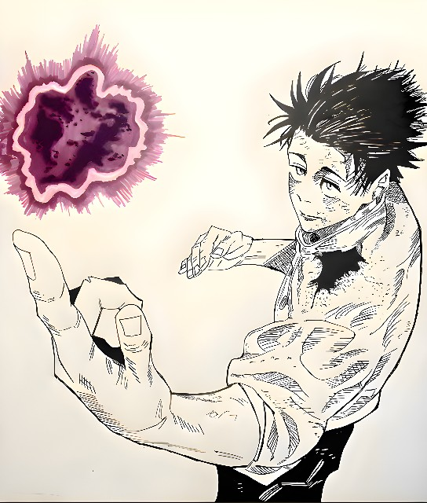

RIFQI ADLI HERNAWAN
LETS STUDY
RELATIVE
PRONOUNCE
WITH
ME
 NLY
NLY
5 MINUTE.
RELATIVE PRONOUNCE
Kata ganti relatif adalah kata ganti yang digunakan untuk memperkenalkan klausa relatif.
klausa yang memberikan informasi lebih lanjut tentang kata benda atau frasa kata. Kata
ganti relatif yang paling umum digunakan dalam bahasa Inggris adalah which, that, who, and whom.